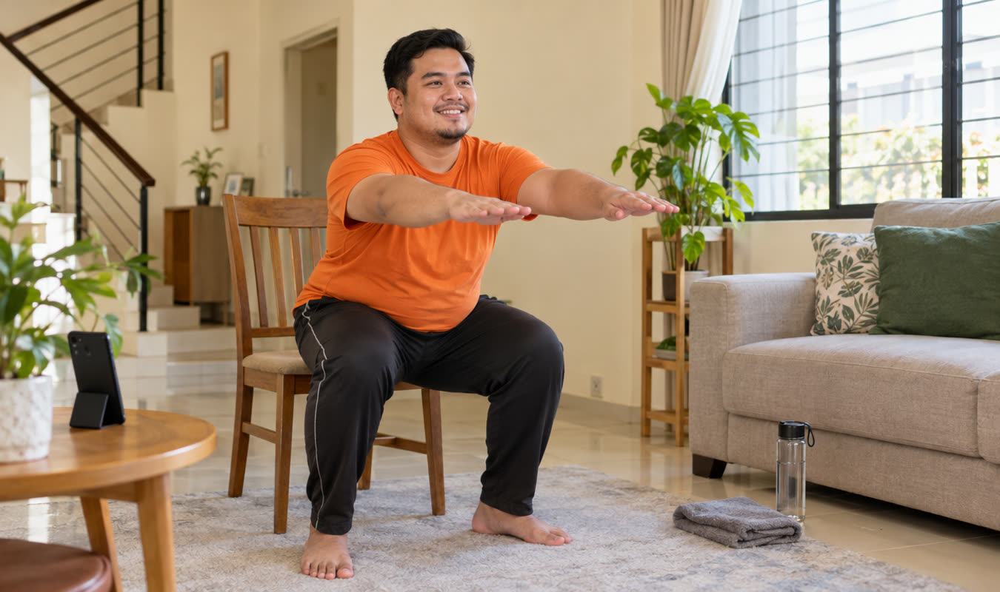
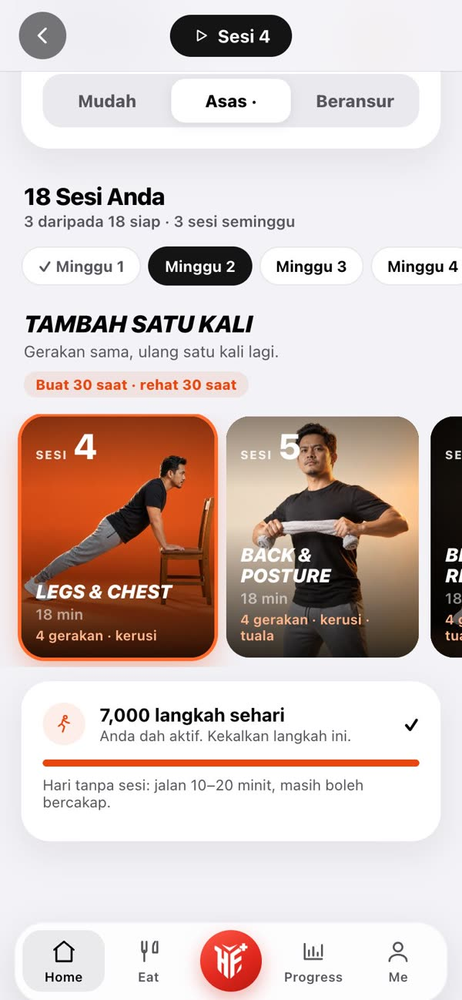
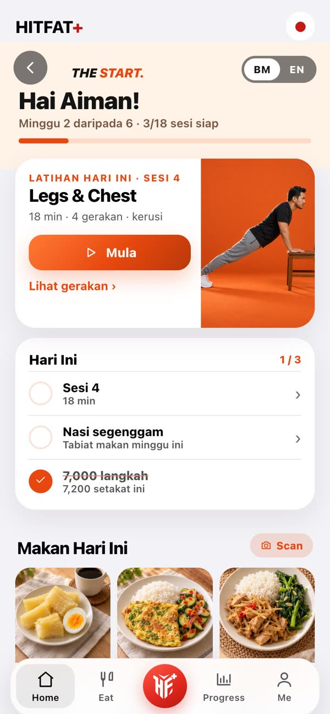
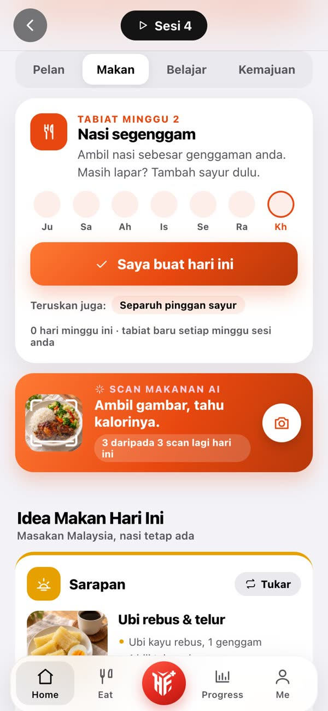
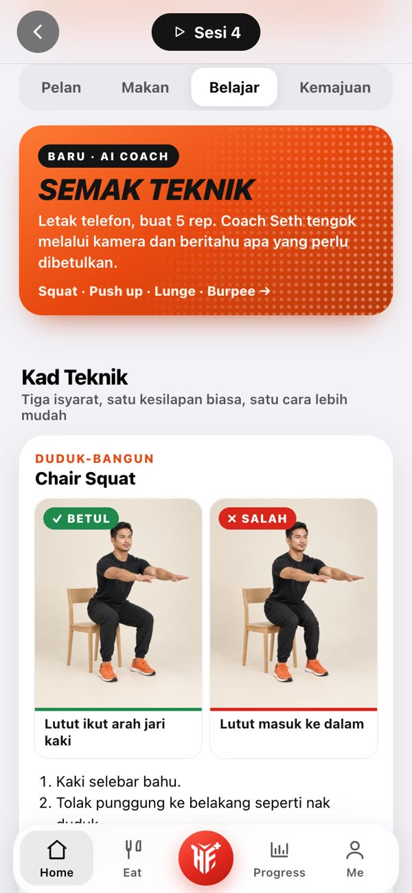
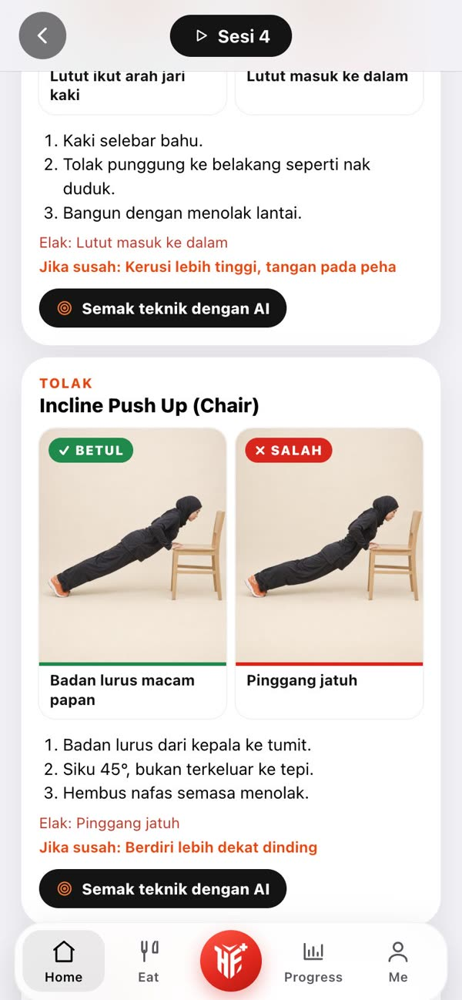

Di rumah · 15–25 minitThe Start.
Nak mula bersenam, tapi tak tahu nak mula di mana?
Program 6 minggu yang mula dari tahap anda. 18 sesi di rumah, 15 hingga 25 minit, dan naik sikit demi sikit setiap minggu.
Tengok program latihan dahulu ↓Dari gym sebenar.
Peserta sebenar, kelas HITFAT
Swipe →Peserta kelas HITFAT, bukan pengguna THE START. Keputusan setiap orang berbeza. Lihat semua testimoni ↓
BSc Sport Science, UiTM
Dah lama nak start, tapi…
Dah cakap "Isnin ni aku nak start". Dah simpan video workout. Tapi bila mula, tak tahu nak buat apa, atau hari kedua dah terlalu penat untuk sambung.
Bukan sebab anda malas. Anda perlukan pelan yang mula perlahan, dan hanya satu perkara berubah setiap minggu.
Muat dalam minggu anda yang sibuk.
Satu program. Semua yang anda perlu.
THE START ialah program 6 minggu untuk yang baru mula: latihan berpandu, langkah harian, tabiat makan dan ilmu asas, dibina ikut jawapan anda dan diikuti dalam app HITFAT+.



Program latihan 6 minggu18 sesi, 3 seminggu, 15 hingga 25 minit. Satu perubahan sahaja setiap minggu.
Video setiap gerakanRakaman coach HITFAT, dengan pemasa, rehat automatik dan isyarat teknik.
Tahap ikut andaMudah, Asas atau Beransur. Gerakan ditukar jika lutut, bahu atau pinggang tak selesa.
Sasaran langkah harianBermula dari tahap anda, naik 1,000 langkah seminggu sampai 7,000.
Sesi rekod 1 & 18Kira duduk-bangun dan tolak dalam 30 saat. Nampak sendiri sejauh mana anda pergi.
Semak Teknik AILetak telefon, buat 5 rep. Kamera semak squat dan push up anda, dan Coach Seth beritahu apa nak dibetulkan.
Satu tabiat makan semingguIdea menu Malaysia setiap hari, pinggan sihat dan sukatan tangan. Tak perlu kira kalori, nasi tetap ada.
Peringatan hari latihanPukul 9 pagi pada hari yang anda pilih: sesi hari ini, berapa minit. Supaya tak terlupa.
BelajarKad teknik setiap corak gerakan, dan 18 pelajaran ringkas tentang latihan dan makan.
20 scan makanan AISnap pinggan, dapat kalori dan makro dalam beberapa saat.
BM atau EnglishTukar bahasa program dengan satu tekan.
Bukan pelan sama untuk semua.
Ada yang tak pernah bersenam, ada yang lutut sakit, ada yang cuma ada 15 minit. Sebab itu tahap dan gerakan anda ikut jawapan anda.
Lihat apa yang disesuaikan untuk anda
Tahap anda ikut…
- Kenapa anda mula, dan seberapa aktif anda sekarang
- Pengalaman bersenam: tak pernah, dah lama berhenti, atau pernah ikut program
- Masa anda: 15, 20 atau 25 minit setiap sesi
- Hari latihan: 3 hari yang anda pilih sendiri
Gerakan anda ikut…
- Lutut, bahu atau pinggang yang kurang selesa: gerakannya ditukar
- Sukar turun ke lantai: versi duduk atau berdiri
- Apa yang ada di rumah: kerusi, tuala, botol air
- Saringan kesihatan: jika ada tanda risiko, tahap kekal Mudah dan app minta anda jumpa doktor dahulu
Pelan anda dibina oleh app HITFAT+ secara automatik daripada jawapan anda. Ubah jawapan bila-bila masa, dan pelan dibina semula.
Tekan Mula. Ikut coach. Siap.
Bukan senarai senaman untuk anda susun sendiri. Setiap sesi sudah dirancang, dan setiap minggu satu perkara berubah. Tekan Mula, dan app bawa anda hingga habis: video coach, pemasa dan rehat automatik.
Rakaman sebenar coach HITFAT di gym HITFAT, bukan animasi. Pratonton dipendekkan; dalam app setiap gerakan 30–40 saat.
 +15
+15Minggu 1 ulang 2 kali. Minggu 2 ulang 3 kali. Minggu 3 buat 40 saat, minggu 4 rehat lebih pendek, minggu 5 gerakan naik setahap.
6 minggu. Setiap sesi dirancang.
Tahap Asas THE START, sesi demi sesi. App menyesuaikannya ikut jawapan anda: gerakan ditukar jika lutut, bahu atau pinggang tak selesa, dan tempoh ikut masa anda.
18 sesi, satu demi satu
Swipe →Satu perubahan seminggu: ulangan → masa buat → rehat → gerakan. Coraknya sama supaya badan belajar (duduk-bangun, tolak, pinggul, badan), tetapi gerakannya bertukar setiap sesi. Setiap gerakan ada video, pemasa dan rehat.
Makanan Malaysia. Nasi tetap ada.
Tak perlu kira kalori. Setiap minggu, satu tabiat makan baharu. Tekan "Saya buat hari ini" bila anda buat, dan app beri idea menu Malaysia setiap hari, ikut sama ada anda masak di rumah atau makan di kedai.
Contoh satu hari
Contoh daripada tab Makan THE START. Tak suka? Tekan Tukar dalam app untuk idea lain.
6 minggu, 6 tabiat
Tukar satu
Makan di luar pun ada panduan
Teknik dulu. Laju kemudian.
Setiap corak gerakan ada kad teknik: gambar betul dan salah, tiga isyarat, dan cara lebih mudah. Tak pasti? Semak Teknik AI tengok anda melalui kamera. Selepas setiap sesi, satu pelajaran ringkas tentang latihan dan makan.


Peserta sebenar. Hasil sebenar.
Peserta kelas HITFAT bersama Coach Seth dan pasukan. Kelas berlainan dengan THE START, tetapi caranya sama: latihan berpandu, mula dari tahap sendiri.
Sebelum → Selepas
Swipe →Kata mereka
Swipe →“Alhamdulillah. Tekanan darah saya dari paras sempadan (140/80) turun ke normal (125/80). Terima kasih Seth.”
“Saya suka sangat join HITFAT sebab coach banyak bagi nasihat dan semangat. Saya dapat turunkan berat badan sebanyak 10 kg dalam tempoh 7 minggu.”
“Tak pernah terfikir jadi peserta paling fit dan menang HITFAT 7.0 Kuantan. Cabaran 2.4 km dalam 12 minit memang gila bagi saya, tapi dengan HITFAT saya mampu buat.”
“Alhamdulillah, akhirnya dapat berat ideal kembali. Dulu kerap migrain dan sakit lutut, tapi kini tiada lagi.”
“Terima kasih coach HITFAT yang bantu saya turunkan berat badan. Bermula dari BMI obesiti kelas 2, kini turun ke BMI overweight. InsyaAllah saya teruskan sampai BMI normal.”
“Dah berjaya turun 8 kg. Saya tak lagi lesu dan selalu mengantuk, dan rasa kebas-kebas kaki dah hilang. Happy bila saiz baju dah bertukar.”
“Saya dah bersama HITFAT selama 5 season, dengan penurunan berat keseluruhan 17 kg. Workout dalam team HITFAT Gombak amat menyeronokkan.”
“Coach, saya bangga join HITFAT dari 77 kg dan sekarang 70 kg. Rasa berbeza sangat.”
“Program HITFAT ini mengubah gaya hidup saya. Dengan pemantauan cara makan dan training daripada coach, berat saya turun dari minggu ke minggu.”
“Akhirnya raya haji ni saya dapat pakai baju raya lama. Alhamdulillah.”
“Kesan sampingan join HITFAT 6 dan HITFAT 7: saya mampu lari half marathon 21 km dua kali dalam 2 minggu, di SCKLM 2016 dan KUMAR 2016.”
“Saya rasa lain sangat, terutama badan dan pergerakan. Baju kurung saya banyak kena alter.”
“Dari HITFAT, saiz XL ke M. Sukar menurunkan berat badan, jadi mudah dan menyedarkan saya betapa pentingnya kesihatan.”
“Saya suka HITFAT sebab coach HITFAT semua ada latar belakang Sains Sukan.”
Gambar dan kata-kata daripada peserta kelas HITFAT, bukan pengguna THE START. Keputusan setiap orang berbeza, bergantung pada konsistensi, pemakanan, tidur dan kesihatan.
Semua yang anda perlu, di telefon anda.
Skrin sebenar THE START dalam app HITFAT+, di app.hitfat.io. Tiada muat turun dari App Store.
6 bahagian app
Tonton, jawab, pelan sedia
Video Coach Seth 33 saat, kemudian 9 soalan: tahap, masa, alat dan keselesaan badan.
Buka app. Tahu apa nak buat.
Latihan hari ini, satu butang Mula, tiga tanda untuk hari ini dan menu dalam gambar.
18 sesi, setiap satu dirancang
Setiap sesi dirancang: pemanasan, 4 gerakan utama dan penyejukan.
Satu tabiat makan seminggu
Tak kira kalori. Tanda bila anda buat, dan dapat idea menu Malaysia setiap hari.
Gerakan yang betul, dari hari pertama
Gambar betul dan salah, dan Semak Teknik AI melalui kamera.
Nampak sejauh mana anda pergi
Sesi siap, rasa setiap sesi, dan rekod sesi 1 berbanding sesi 18.
Snap pinggan.
Tahu makronya.
Ambil gambar makanan anda. Dalam beberapa saat, app kira kalori, protein, karbo dan lemak, dan tunjuk setiap bahan di pinggan. Tak perlu timbang, tak perlu cari dalam senarai.
Snap sekali
Halakan kamera ke pinggan dan tekan. Makanan bungkus? Scan barcode atau label nutrisinya.
Setiap bahan, setiap makro
AI kenal nasi, ayam, sayur dan sos, kira setiap satu, dan tunjuk apa makanan ini buat pada hari anda.
Masuk terus ke hari anda
Tekan Log. Kalori dan makro hari ini dikemas kini ikut sasaran anda, bersama menu yang dirancang.
Kenali Bara, kawan anda dalam app
Bara ada di skrin utama app. Dia ingatkan anda bergerak dan minum air, dan dia bertukar merah bila hari anda makin baik.


Sesuai untuk saya?
Sesuai kalau anda…
- Baru nak mula bersenam, atau dah lama berhenti
- Lelaki atau wanita, yang nak mula dengan betul
- Lebih selesa bersenam di rumah, tanpa peralatan gym
- Ada 15 hingga 25 minit, 3 hari seminggu
- Ada lutut, bahu atau pinggang yang kurang selesa
- Nak pelan yang jelas, satu langkah pada satu masa
Mungkin kurang sesuai kalau anda…
- Dah lama bersenam dan mahukan cabaran tinggi
- Mahukan coach peribadi yang pantau setiap hari
- Sedang dalam rawatan atau pemulihan kecederaan
Kurang RM3.30 satu sesi.
Satu kelas walk-in di gym HITFAT ialah RM40. THE START memberi anda 18 sesi berpandu, 6 minggu, ikut tahap anda.
Sessions
step by step
Sessions
Supaya jelas: THE START ialah program kendiri dalam app, tanpa coach peribadi atau sesi 1-ke-1. Untuk soalan akses atau bayaran, kami bantu melalui WhatsApp.
Ada soalan?
Saya betul-betul tak pernah bersenam. Sesuai ke?
Sesuai. Itu sebab THE START wujud. Kuiz akan letak anda di tahap Mudah jika perlu, dan minggu pertama setiap set gerakan cuma diulang 2 kali: buat 30 saat, rehat 30 saat. Setiap gerakan ada video. Jika terasa sakit pada sendi, berhenti.
Untuk lelaki atau wanita?
Kedua-duanya. Gerakan dan pelan yang sama sesuai untuk lelaki dan wanita.
Perlu pergi gym atau beli peralatan?
Tak perlu. Semua di rumah, cukup ruang sebesar tikar. Anda cuma perlukan kerusi yang stabil, tuala dan botol air. Tiada tuala? Gerakan tarik boleh dibuat tanpa tuala.
RM59 ni bayar sekali atau bulanan?
Sekali sahaja. Tiada langganan, dan program milik anda selamanya. Ulang bila-bila masa.
Berapa lama setiap sesi?
15 hingga 25 minit, ikut masa yang anda pilih dalam kuiz. Tiga sesi seminggu, pada hari yang anda pilih.
Lutut atau pinggang saya selalu sakit.
Beritahu dalam kuiz. App akan tukar gerakan kepada versi yang lebih selamat untuk bahagian itu. Jika sakit tajam, berhenti dan dapatkan nasihat doktor atau fisioterapi.
Apa maksud tahap Mudah, Asas dan Beransur?
Tiga tahap gerakan untuk corak yang sama. Mudah guna kerusi dan dinding, Asas untuk kebanyakan orang, Beransur untuk yang pernah aktif. App pilih ikut jawapan anda, dan anda boleh tukar.
Ada coach personal yang pantau saya?
Tidak. THE START ialah program kendiri dalam app: video, pelan sesi, langkah harian dan pelajaran. Untuk masalah akses atau bayaran, WhatsApp kami.
Perlu muat turun app?
Tak perlu App Store atau Play Store. HITFAT+ dibuka terus di pelayar telefon, dan anda boleh letak ikonnya di skrin utama.
Macam mana nak akses selepas bayar?
Anda nampak halaman pengesahan, kemudian tekan "Buka THE START" dan log masuk dengan Google atau emel yang sama seperti semasa bayar. Jawab 9 soalan, dan Sesi 1 terbuka. Kami juga hantar emel dengan pautan yang sama. Jika bayaran berjaya tetapi program tidak terbuka, WhatsApp kami dengan nombor pesanan.
Ada bayaran balik?
Semua pembelian adalah muktamad dan tiada bayaran balik (polisi bayaran balik).
Saya dah ada HITFAT+. Perlu beli lagi?
Tak perlu. THE START termasuk dalam membership HITFAT+.
Hari pertama bermula di sini.
Tak perlu tunggu Isnin. Tak perlu jadi sempurna. Mula dengan satu sesi pendek, dan biar pelan bawa anda, minggu demi minggu.
Ada soalan? WhatsApp kami